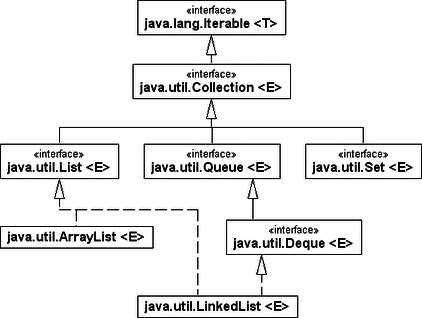

{% extends "../_base_template.html" %}
{% block title %}Lektion 12 - Sortieren{% endblock %}

{% block sections %}
<section data-markdown>
<textarea data-template>
<i class="fas fa-graduation-cap"></i> Lektion 12 - Collections API, Listen-Sort
=============================

**Ziele:**

* Sie kennen die Schnittstellen der Java Collections API (List, Set, Map, Queue) und deren
  konkreten Implementierungen
* Sie können ArrayList und LinkedList in Java anwenden und sie zweckdienlich in eigenen Programmen
  verwenden
* Sie kennen die gängigsten Sortieralgorithmen (Listenbasiert) und in ihrem Einsatzgebiet beschreiben.
* Sie können anhand von Beispielen die Sortieralgorithmen nachvollziehen
* Sie verstehen die Java-Implementationen von Merge Sort und Insertion Sort
* Sie können Insertion Sort selbst in Java umsetzen
</textarea>
</section>

<section data-markdown>
<textarea data-template>
<i class="fas fa-graduation-cap"></i> "Schnellbleiche" Collections API
=============================

Java stellt mit der **Collections API** eine Interface- und Klassensammlung zur Verfügung,
um Daten, welche als "Menge" organisiert werden können, zu verwalten. Durch eine gemeinsame
Schnittstelle erhalten alle implementierenden Klassen einen gemeinsamen Rahmen: Sie lassen
sich alle gleich anwenden.

Die Operationen lassen sich grob einteilen in:

* Basisoperationen zum Erfragen der Elementanzahl und zum Hinzufügen, Löschen,
  Selektieren und Finden von Elementen
* Mengenoperationen, um etwa andere Sammlungen einzufügen
* Feldoperationen bei Collection, um die Sammlung in ein Array zu konvertieren, und bei Map Operationen,
  um alternative Ansichten von Schlüsseln oder Werten zu bekommen.

** Voraussetzungen für das Verständnis**

* Sie wissen, was ein **Interface** ist und zu was es dient
* Sie wissen, was eine **abstrakte Klasse** ist und zu welchem Zweck sie dient
* Sie wissen, was **Generics** sind und zu was es dient
</textarea>
</section>

<section data-markdown>
<textarea data-template>
<i class="fas fa-graduation-cap"></i> "Schnellbleiche" Collections API
=============================

**Anwendungs-Beispiel**

```java
public class CollectionDemo
{
  private static void fill( Collection<String> c )
  {
    c.add( "Juvy" );
    c.add( "Tina" );
    c.add( "Joy" );
  }

  public static void main( String[] args )
  {
    List<String> c = new LinkedList<String>();
    fill( c );
    System.out.println( c );     // [Juvy, Tina, Joy]
    Collections.sort( c );
    System.out.println( c );     // [Joy, Juvy, Tina]
  }
}
```

Wir sehen darin ein paar wichtige Aspekte:

* Seit Java 5 sind alle Datenstrukturen **generisch** deklariert. Statt new LinkedList() schreiben wir `new LinkedList<String>()`.
* Unserer eigenen statischen Methode fill() ist es **egal, welche Collection wir ihr geben**. Sie arbeitet nicht nur auf der LinkedList,
  sondern genauso auf einer ArrayList und auf Mengen (Set-Objekte), denn Set-Klassen implementieren ebenfalls Collection, und somit
  dessen Methoden.
* Eine Liste lässt sich mit add() füllen. Die Methode schreibt die Schnittstelle Collection vor und LinkedList realisiert die Operation aus der Schnittstelle.
* Während Collection eine Schnittstelle ist, die von unterschiedlichen Datenstrukturen implementiert wird,
  ist Collections eine Utililty-Klasse mit vielen Hilfsmethoden, etwa zum sortieren mit Collections.sort().
</textarea>
</section>

<section data-markdown>
<textarea data-template>
<i class="fas fa-graduation-cap"></i> "Schnellbleiche" Collections API
=============================

**UML der Collections-API**



**Quellen:**

* https://docs.oracle.com/javase/7/docs/technotes/guides/collections/overview.html
* https://docs.oracle.com/javase/tutorial/collections/interfaces/index.html

</textarea>
</section>

<section data-markdown>
<textarea data-template>
<i class="fas fa-graduation-cap"></i> "Schnellbleiche" Collections API
=============================

**Typen von Collections**

* Interface **List**: Das List-Interface erweitert die Collections-Schnittstelle, um geordnete Listen abbilden zu können.
  Auf Elemente der Liste lässt sich über einen ganzzahlingen Index zugreifen, und es kann linear nach Elementen gesucht werden.
  Doppelte Elemente sind erlaubt, auch beliebig viele null-Einträge.
* Interface **Set**: Eine Menge von Objekten. Ein Set ist eine im mathematischen Sinn definierte Menge von Objekten. Wie von mathematischen Mengen bekannt, darf ein Set keine doppelten Elemente enthalten.
* Interface **Map**: Eine Datenstruktur, die einen Schlüssel (engl.: Key) mit einem Wert (engl.: Value) verbindet, heisst Assoziativspeicher. Werden wir später behandeln.
* Interface **Queue**: Eine Queue arbeitet nach dem FIFO-Prinzip (First In, First Out): Zuerst eingefügte Elemente werden zuerst wieder ausgegeben (Anders als beim Stack). Werden wir später behandeln.
</textarea>
</section>

<section data-markdown>
<textarea data-template>
<i class="fas fa-graduation-cap"></i> "Schnellbleiche" Collections API
=============================

**Konkrete Implementierungen, am Beispiel `List`**

Klasse       | Beschreibung
-------------|-----------------------
ArrayList    | Implementiert die Listen-Funktionalität durch die Abbildung durch ein Feld (ein Array). Implementiert die Schnittstelle List.
LinkedList   | LinkedList ist eine doppelt verkettete Liste, das kennen Sie bereits. Dies ist nützlich beim Einfügen und Löschen von Elementen an beliebigen Stellen in der Liste.

**Beispiele**

```java
// Namespaces importieren (ganz oben im File, Eclipse macht dies bei Autovervollständigung automatisch):
import java.util.ArrayList;
import java.util.LinkedList;
import java.util.List;

// Neue Liste für String-Elemente mit ArrayList:
List<String> arrList = new ArrayList<>();
// neue Liste für String-Elemente als LinkedList:
List<String> linkedList = new LinkedList<>();

// Die Operationen darauf sind bei beiden Implementationen dieselben (List-Interface):
arrList.add("Hello");
linkedList.add("Hello");
arrList.get(0);
linkedList.get(0);
arrList.remove(0);
linkedList.remove(0);
```

**Regeln**

* Ist eine Sequenz, also eine feste Ordnung, gefordert? Dann nimm eine Liste.
* Soll es viele schnelle Zugriffe via Index auf Elemente geben? Dann nimm eine ArrayList.
* Werden oft am Ende und am Anfang Elemente angefügt / entfernt? Dann kann LinkedList punkten.

</textarea>
</section>

<section data-markdown>
<textarea data-template>
<i class="fas fa-graduation-cap"></i> "Schnellbleiche" Collections API
=============================

**Wichtige `List`-Methoden**

Die folgenden Methoden sind in etwa die wichtigsten Methoden, die Sie auch für unsere Sortier-Probleme benötigen:

```java
// Instanzieren einer Liste, hier in der konkreten Implementierung ArrayList:
    List<Integer> l = new ArrayList<>();

// Elemente hinzufügen:
   l.add(5);

// Elemente an spezifischer Position einfügen:
   l.add(2,5); // Füge 5 an Stelle 2 ein

// Elemente setzen / überschreiben:
    l.set(2,5); // Setze Element 5 an Stelle 2 (überschreibe Stelle 2)

// auslesen:
   l.get(2); // Gib das Element an Position 2 zurück

// Entfernen:
   l.remove(2); // Element an Stelle 2 entfernen

// Grösse ermitteln (Anzahl Elemente in Liste):
   s.size();

// zwei Elemente miteinander vertauschen (hier: Stelle 2 und 4):
   int tmp = l.get(2);
   l.set(2,l.get(4));
   l.set(4,tmp);
```

</textarea>
</section>

<section data-markdown>
<textarea data-template>
<i class="fas fa-graduation-cap"></i> "Schnellbleiche" Collections API
=============================

**Anwendung**


<i class="far fa-hand-point-right"></i> Siehe Inauen-Script, 19.4 - Anwendungen

<i class="far fa-hand-point-right"></i> Sehen Sie sich dieses Kapitel durch - Sie sehen dort viele Anwendungsbeispiele dieser Klassen-Bibliothek. Wir werden diese für die Sortierung mit Listen benötigen!


[Weiter mit Sortieren mit Listen](./unterricht_sortieren.html)

</textarea>
</section>
 {% endblock %}
